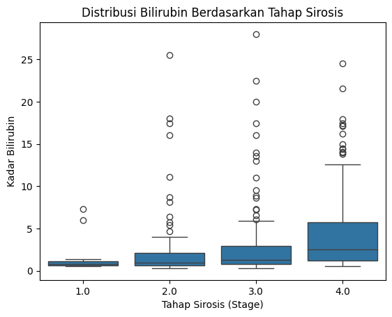
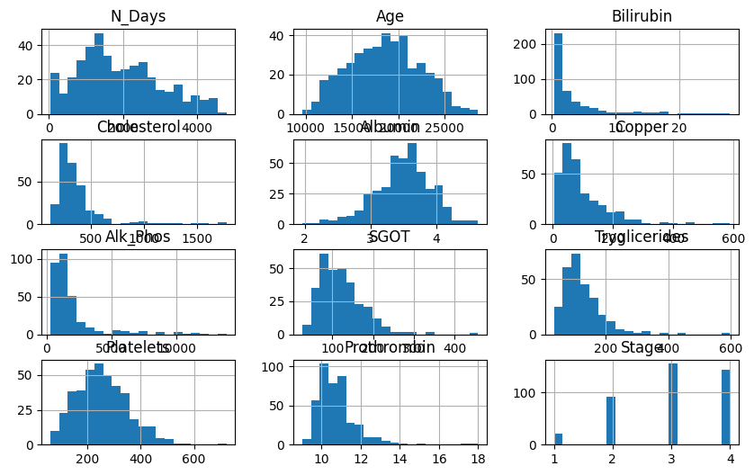
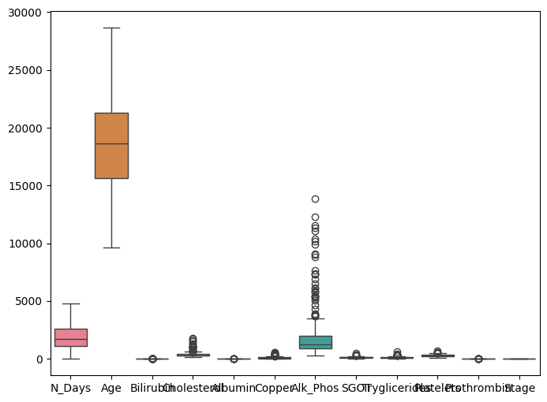
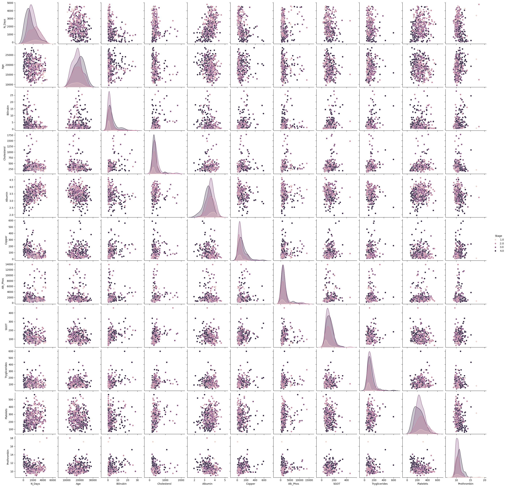

Data Understanding#
Pemahaman data merupakan tahap awal dalam proses Knowledge Discovery in Databases (KDD) atau Data Mining. Langkah ini bertujuan untuk mengeksplorasi, menyelidiki, dan menganalisis dataset agar dapat memahami struktur, isi, serta karakteristik data sebelum melakukan analisis lebih lanjut.
Pemahaman data yang baik sangat penting karena berpengaruh terhadap keberhasilan seluruh proses data mining, termasuk tahap data preparation, modeling, dan evaluation.
Tujuan Pemahaman Data#
Memahami Konteks Data – Mengenali sumber data, makna setiap variabel, serta hubungan antarvariabel dalam dataset.
Mengidentifikasi Permasalahan dalam Data – Menemukan missing values, outliers, noise, atau ketidakkonsistenan dalam data.
Menilai Kualitas Data – Memastikan bahwa data memiliki tingkat akurasi, kelengkapan, dan relevansi yang cukup untuk dianalisis.
Menentukan Arah Analisis – Berdasarkan pemahaman awal, dapat dirumuskan hipotesis serta teknik data mining yang sesuai.
Tahapan dalam Memahami Data#
Berikut adalah beberapa langkah dalam memahami data:
!pip install pymysql
!pip install pandas
!pip install psycopg2-binary
!pip install sqlalchemy
!pip install python-dotenv
Requirement already satisfied: pymysql in /usr/local/python/3.12.1/lib/python3.12/site-packages (1.1.1)
[notice] A new release of pip is available: 24.3.1 -> 25.0.1
[notice] To update, run: python3 -m pip install --upgrade pip
Requirement already satisfied: pandas in /home/codespace/.local/lib/python3.12/site-packages (2.2.3)
Requirement already satisfied: numpy>=1.26.0 in /home/codespace/.local/lib/python3.12/site-packages (from pandas) (2.2.0)
Requirement already satisfied: python-dateutil>=2.8.2 in /home/codespace/.local/lib/python3.12/site-packages (from pandas) (2.9.0.post0)
Requirement already satisfied: pytz>=2020.1 in /home/codespace/.local/lib/python3.12/site-packages (from pandas) (2024.2)
Requirement already satisfied: tzdata>=2022.7 in /home/codespace/.local/lib/python3.12/site-packages (from pandas) (2024.2)
Requirement already satisfied: six>=1.5 in /home/codespace/.local/lib/python3.12/site-packages (from python-dateutil>=2.8.2->pandas) (1.17.0)
[notice] A new release of pip is available: 24.3.1 -> 25.0.1
[notice] To update, run: python3 -m pip install --upgrade pip
Requirement already satisfied: psycopg2-binary in /usr/local/python/3.12.1/lib/python3.12/site-packages (2.9.10)
[notice] A new release of pip is available: 24.3.1 -> 25.0.1
[notice] To update, run: python3 -m pip install --upgrade pip
Requirement already satisfied: sqlalchemy in /usr/local/python/3.12.1/lib/python3.12/site-packages (2.0.38)
Requirement already satisfied: greenlet!=0.4.17 in /usr/local/python/3.12.1/lib/python3.12/site-packages (from sqlalchemy) (3.1.1)
Requirement already satisfied: typing-extensions>=4.6.0 in /home/codespace/.local/lib/python3.12/site-packages (from sqlalchemy) (4.12.2)
[notice] A new release of pip is available: 24.3.1 -> 25.0.1
[notice] To update, run: python3 -m pip install --upgrade pip
Requirement already satisfied: python-dotenv in /usr/local/python/3.12.1/lib/python3.12/site-packages (1.0.1)
[notice] A new release of pip is available: 24.3.1 -> 25.0.1
[notice] To update, run: python3 -m pip install --upgrade pip
Upload env:
from google.colab import files
uploaded = files.upload()
---------------------------------------------------------------------------
ModuleNotFoundError Traceback (most recent call last)
Cell In[2], line 1
----> 1 from google.colab import files
2 uploaded = files.upload()
ModuleNotFoundError: No module named 'google'
koneksikan database di aiven
import pandas as pd
# Ganti 'nama_file.csv' dengan nama file yang sudah di-upload
df = pd.read_csv('cirrhosis.csv')
# Lihat beberapa baris pertama untuk memastikan
print(df.head())
ID N_Days Status Drug Age Sex Ascites Hepatomegaly Spiders \
0 1 400 D D-penicillamine 21464 F Y Y Y
1 2 4500 C D-penicillamine 20617 F N Y Y
2 3 1012 D D-penicillamine 25594 M N N N
3 4 1925 D D-penicillamine 19994 F N Y Y
4 5 1504 CL Placebo 13918 F N Y Y
Edema Bilirubin Cholesterol Albumin Copper Alk_Phos SGOT \
0 Y 14.5 261.0 2.60 156.0 1718.0 137.95
1 N 1.1 302.0 4.14 54.0 7394.8 113.52
2 S 1.4 176.0 3.48 210.0 516.0 96.10
3 S 1.8 244.0 2.54 64.0 6121.8 60.63
4 N 3.4 279.0 3.53 143.0 671.0 113.15
Tryglicerides Platelets Prothrombin Stage
0 172.0 190.0 12.2 4.0
1 88.0 221.0 10.6 3.0
2 55.0 151.0 12.0 4.0
3 92.0 183.0 10.3 4.0
4 72.0 136.0 10.9 3.0
2. Profiling data#
Profiling data adalah langkah penting dalam memahami karakteristik dataset sebelum melakukan analisis lebih lanjut.
Ringkasan variabel dalam dataset#
Menampilkan Informasi Dataset
# Menampilkan informasi struktur DataFrame setelah penggabungan
print(df.info()) # Menampilkan jumlah baris, kolom, tipe data, dan jumlah nilai non-null di setiap kolom
<class 'pandas.core.frame.DataFrame'>
RangeIndex: 418 entries, 0 to 417
Data columns (total 20 columns):
# Column Non-Null Count Dtype
--- ------ -------------- -----
0 ID 418 non-null int64
1 N_Days 418 non-null int64
2 Status 418 non-null object
3 Drug 312 non-null object
4 Age 418 non-null int64
5 Sex 418 non-null object
6 Ascites 312 non-null object
7 Hepatomegaly 312 non-null object
8 Spiders 312 non-null object
9 Edema 418 non-null object
10 Bilirubin 418 non-null float64
11 Cholesterol 284 non-null float64
12 Albumin 418 non-null float64
13 Copper 310 non-null float64
14 Alk_Phos 312 non-null float64
15 SGOT 312 non-null float64
16 Tryglicerides 282 non-null float64
17 Platelets 407 non-null float64
18 Prothrombin 416 non-null float64
19 Stage 412 non-null float64
dtypes: float64(10), int64(3), object(7)
memory usage: 65.4+ KB
None
Menampilkan Ringkasan Statistik untuk Variabel Numerik
# Menampilkan statistik deskriptif untuk semua kolom numerik, kecuali 'id'
print(df.drop(columns=['id']).describe())
N_Days Age Bilirubin Cholesterol Albumin \
count 418.000000 418.000000 418.000000 284.000000 418.000000
mean 1917.782297 18533.351675 3.220813 369.510563 3.497440
std 1104.672992 3815.845055 4.407506 231.944545 0.424972
min 41.000000 9598.000000 0.300000 120.000000 1.960000
25% 1092.750000 15644.500000 0.800000 249.500000 3.242500
50% 1730.000000 18628.000000 1.400000 309.500000 3.530000
75% 2613.500000 21272.500000 3.400000 400.000000 3.770000
max 4795.000000 28650.000000 28.000000 1775.000000 4.640000
Copper Alk_Phos SGOT Tryglicerides Platelets \
count 310.000000 312.000000 312.000000 282.000000 407.000000
mean 97.648387 1982.655769 122.556346 124.702128 257.024570
std 85.613920 2140.388824 56.699525 65.148639 98.325585
min 4.000000 289.000000 26.350000 33.000000 62.000000
25% 41.250000 871.500000 80.600000 84.250000 188.500000
50% 73.000000 1259.000000 114.700000 108.000000 251.000000
75% 123.000000 1980.000000 151.900000 151.000000 318.000000
max 588.000000 13862.400000 457.250000 598.000000 721.000000
Prothrombin Stage
count 416.000000 412.000000
mean 10.731731 3.024272
std 1.022000 0.882042
min 9.000000 1.000000
25% 10.000000 2.000000
50% 10.600000 3.000000
75% 11.100000 4.000000
max 18.000000 4.000000
Menampilkan Statistik untuk Variabel Kategorikal
# Menampilkan jumlah sampel untuk setiap kategori di setiap kolom
for column in df.select_dtypes(include=['object', 'category']).columns:
print(f"Distribusi untuk kolom '{column}':")
print(df[column].value_counts())
print() # Baris kosong antara hasil
Distribusi untuk kolom 'Status':
Status
C 232
D 161
CL 25
Name: count, dtype: int64
Distribusi untuk kolom 'Drug':
Drug
D-penicillamine 158
Placebo 154
Name: count, dtype: int64
Distribusi untuk kolom 'Sex':
Sex
F 374
M 44
Name: count, dtype: int64
Distribusi untuk kolom 'Ascites':
Ascites
N 288
Y 24
Name: count, dtype: int64
Distribusi untuk kolom 'Hepatomegaly':
Hepatomegaly
Y 160
N 152
Name: count, dtype: int64
Distribusi untuk kolom 'Spiders':
Spiders
N 222
Y 90
Name: count, dtype: int64
Distribusi untuk kolom 'Edema':
Edema
N 354
S 44
Y 20
Name: count, dtype: int64
Distribusi untuk kolom 'Bilirubin Level':
Bilirubin Level
Low 157
Medium 139
High 47
Name: count, dtype: int64
3. Korelasi dan asosiasi#
Memahami hubungan antar variabel#
Menghitung Korelasi Antar Variabel Numerik
import seaborn as sns
import matplotlib.pyplot as plt
# Membuat boxplot untuk melihat distribusi 'Bilirubin' berdasarkan 'Stage'
sns.boxplot(x="Stage", y="Bilirubin", data=df)
# Menampilkan plot
plt.title("Distribusi Bilirubin Berdasarkan Tahap Sirosis")
plt.xlabel("Tahap Sirosis (Stage)")
plt.ylabel("Kadar Bilirubin")
plt.show()

4. Eksplorasi Data#
Eksplorasi data bertujuan untuk memahami distribusi variabel, hubungan antar fitur, serta mendeteksi masalah seperti outliers atau missing values.
1. Distribusi Data Numerik#
Menggunakan Histogram untuk melihat sebaran nilai dari setiap fitur numerik.
# Membuat histogram untuk semua kolom kecuali 'id'
# figsize=(10, 6) → Menentukan ukuran figure
# bins=20 → Membagi data ke dalam 20 interval
df.loc[:, df.columns != 'ID'].hist(figsize=(10, 6), bins=20)
# Menampilkan histogram
plt.show()

2. Distribusi Data tiap kategori#
Menggunakan box plot untuk melihat tiap kategori.
# Membuat figure dengan ukuran 8x6
plt.figure(figsize=(8,6))
# Membuat boxplot untuk melihat distribusi dan outlier pada semua fitur numerik
# Kolom 'id' dihapus karena tidak relevan dalam analisis
sns.boxplot(data=df.loc[:, df.columns != 'ID'])
# Menampilkan plot
plt.show()

3. Hubungan Antar Variabel#
Scatter plot membantu melihat hubungan antara dua variabel numerik.
# Membuat pairplot antar fitur numerik berdasarkan kolom 'Stage'
sns.pairplot(df.drop(columns=['ID']), hue='Stage')
# Menampilkan plot
plt.show()

5. Identifikasi masalah#
deteksi missing value
# Mengecek jumlah missing value di setiap kolom
missing_values = df.isnull().sum()
# Menampilkan hasil jika ada missing value
print("Jumlah Missing Value per Kolom:\n", missing_values)
Jumlah Missing Value per Kolom:
ID 0
N_Days 0
Status 0
Drug 106
Age 0
Sex 0
Ascites 106
Hepatomegaly 106
Spiders 106
Edema 0
Bilirubin 0
Cholesterol 134
Albumin 0
Copper 108
Alk_Phos 106
SGOT 106
Tryglicerides 136
Platelets 11
Prothrombin 2
Stage 6
Bilirubin Level 75
dtype: int64
Preprocessing#
cek missing value, drop kolom tidak relevan, sisi missing value,dan normalisasi
import pandas as pd
from sklearn.preprocessing import LabelEncoder, StandardScaler
# 1. Cek missing values
print("Jumlah missing values:")
print(df.isnull().sum())
# 2. Drop kolom tidak relevan (misalnya ID)
df = df.drop(columns=['ID'])
# 3. Isi missing value numerik dengan median (lebih tahan outlier)
for col in df.select_dtypes(include=['float64', 'int64']).columns:
df[col] = df[col].fillna(df[col].median())
# 4. Isi missing value kategorikal dengan modus (nilai terbanyak)
for col in df.select_dtypes(include=['object']).columns:
df[col] = df[col].fillna(df[col].mode()[0])
# 5. Encode kolom kategorikal ke angka (Label Encoding)
le = LabelEncoder()
for col in df.select_dtypes(include=['object']).columns:
df[col] = le.fit_transform(df[col])
# 6. (Opsional) Normalisasi fitur numerik
scaler = StandardScaler()
numerical_cols = df.select_dtypes(include=['float64', 'int64']).columns
df[numerical_cols] = scaler.fit_transform(df[numerical_cols])
# 7. Dataset siap pakai
print("Dataset setelah preprocessing:")
print(df.head())
Jumlah missing values:
ID 0
N_Days 0
Status 0
Drug 106
Age 0
Sex 0
Ascites 106
Hepatomegaly 106
Spiders 106
Edema 0
Bilirubin 0
Cholesterol 134
Albumin 0
Copper 108
Alk_Phos 106
SGOT 106
Tryglicerides 136
Platelets 11
Prothrombin 2
Stage 6
Bilirubin Level 75
dtype: int64
Dataset setelah preprocessing:
N_Days Status Drug Age Sex Ascites Hepatomegaly \
0 -1.375612 1.225441 -0.763763 0.768941 -0.342997 4.051749 0.755929
1 2.340341 -0.869587 -0.763763 0.546706 -0.342997 -0.246807 0.755929
2 -0.820938 1.225441 -0.763763 1.852567 2.915476 -0.246807 -1.322876
3 0.006542 1.225441 -0.763763 0.383244 -0.342997 -0.246807 0.755929
4 -0.375023 0.177927 1.309307 -1.210972 -0.342997 -0.246807 0.755929
Spiders Edema Bilirubin Cholesterol Albumin Copper Alk_Phos \
0 1.909043 3.553818 2.562152 -0.462810 -2.114296 0.869937 -0.043326
1 1.909043 -0.396969 -0.481759 -0.250257 1.513818 -0.501099 2.987731
2 -0.523823 1.578425 -0.413611 -0.903470 -0.041088 1.595779 -0.685119
3 1.909043 1.578425 -0.322748 -0.550942 -2.255651 -0.366683 2.308028
4 1.909043 -0.396969 0.040704 -0.369494 0.076708 0.695197 -0.602359
SGOT Tryglicerides Platelets Prothrombin Stage Bilirubin Level
0 0.354624 0.976773 -0.689990 1.442407 1.115988 NaN
1 -0.143679 -0.579186 -0.370101 -0.128736 -0.027353 Medium
2 -0.498998 -1.190456 -1.092430 1.246014 1.115988 Medium
3 -1.222487 -0.505093 -0.762223 -0.423325 1.115988 Medium
4 -0.151226 -0.875559 -1.247215 0.165853 -0.027353 High
1. Missing Values#
Beberapa kolom memiliki jumlah nilai yang hilang cukup signifikan. Misalnya:
Kolom
Drug,Ascites,Hepatomegaly, danSpidersmasing-masing memiliki 106 nilai hilang.Kolom
Cholesterol,Copper,Alk_Phos,SGOT, danTrygliceridesmemiliki lebih dari 100 nilai hilang.Kolom
StagedanBilirubin Leveljuga memiliki missing values, walau jumlahnya lebih sedikit.
Langkah penanganan:
Kolom numerik seperti
Cholesterol,Platelets, danProthrombindiisi menggunakan nilai median.Kolom kategorikal seperti
Drug,Stage, danBilirubin Leveldiisi menggunakan nilai modus (nilai yang paling sering muncul).
2. Preprocessing#
Setelah preprocessing, semua nilai di dataset telah berupa angka. Ini penting karena algoritma machine learning hanya dapat memproses data numerik. Selain itu, fitur numerik telah dinormalisasi menggunakan StandardScaler, yang membuat setiap fitur memiliki distribusi dengan rata-rata 0 dan standar deviasi 1. Ini bertujuan agar setiap fitur memiliki pengaruh yang seimbang terhadap model.
3. Encoding#
Beberapa kolom bersifat kategorikal, contohnya:
Drug(jenis obat)Sex(jenis kelamin)Stage(tahapan sirosis)Bilirubin Level(tingkat bilirubin)
Semua kolom tersebut diubah ke bentuk numerik menggunakan teknik encoding, misalnya One-Hot Encoding. Ini penting agar model dapat mengolah informasi kategorikal dengan benar.
4. Target Klasifikasi#
Kolom Status dijadikan target (label) untuk klasifikasi. Nilai 1 menunjukkan pasien masih hidup, sedangkan 2 menunjukkan pasien meninggal. Tujuan model klasifikasi ini adalah memprediksi status akhir pasien berdasarkan fitur-fitur klinis yang tersedia.
5. Ringkasan Langkah#
Menghapus kolom tidak relevan (
ID)Menangani nilai hilang pada fitur numerik dan kategorikal
Mengubah semua fitur menjadi numerik
Melakukan normalisasi data
Memisahkan fitur (
X) dan target (y)Melatih model klasifikasi dengan data training
Melakukan evaluasi terhadap model menggunakan metrik seperti akurasi, precision, recall, dan confusion matrix
Pemodelan (klasisfikasi : random forest)#
import pandas as pd
from sklearn.model_selection import train_test_split
from sklearn.preprocessing import LabelEncoder, StandardScaler
from sklearn.ensemble import RandomForestClassifier
from sklearn.metrics import classification_report, confusion_matrix, accuracy_score
# =========================
# 1. LOAD DATASET
# =========================
# Contoh load dari CSV
df = pd.read_csv('cirrhosis.csv') # Ganti path jika perlu
# =========================
# 2. CEK & BERSIHKAN DATA
# =========================
# Drop kolom ID (tidak relevan)
df = df.drop(columns=['ID'])
# Tangani missing value numerik
for col in df.select_dtypes(include=['float64', 'int64']).columns:
df[col] = df[col].fillna(df[col].median())
# Tangani missing value kategorikal
for col in df.select_dtypes(include=['object']).columns:
df[col] = df[col].fillna(df[col].mode()[0])
# =========================
# 3. PISAHKAN FITUR & TARGET
# =========================
# Gunakan 'Status' sebagai target (1 = hidup, 2 = meninggal)
X = df.drop(columns=['Status'])
y = df['Status']
# Encode fitur kategorikal ke numerik (One-Hot Encoding)
X = pd.get_dummies(X, drop_first=True)
# =========================
# 4. NORMALISASI (Opsional)
# =========================
scaler = StandardScaler()
X[X.columns] = scaler.fit_transform(X)
# =========================
# 5. SPLIT DATA
# =========================
X_train, X_test, y_train, y_test = train_test_split(
X, y, test_size=0.2, random_state=42
)
# =========================
# 6. LATIH MODEL
# =========================
model = RandomForestClassifier(random_state=42)
model.fit(X_train, y_train)
# =========================
# 7. EVALUASI
# =========================
y_pred = model.predict(X_test)
print("Confusion Matrix:")
print(confusion_matrix(y_test, y_pred))
print("\nClassification Report:")
print(classification_report(y_test, y_pred))
print("\nAkurasi:")
print(accuracy_score(y_test, y_pred))
Confusion Matrix:
[[39 0 5]
[ 3 0 1]
[ 7 0 29]]
Classification Report:
precision recall f1-score support
C 0.80 0.89 0.84 44
CL 0.00 0.00 0.00 4
D 0.83 0.81 0.82 36
accuracy 0.81 84
macro avg 0.54 0.56 0.55 84
weighted avg 0.77 0.81 0.79 84
Akurasi:
0.8095238095238095
/usr/local/lib/python3.11/dist-packages/sklearn/metrics/_classification.py:1565: UndefinedMetricWarning: Precision is ill-defined and being set to 0.0 in labels with no predicted samples. Use `zero_division` parameter to control this behavior.
_warn_prf(average, modifier, f"{metric.capitalize()} is", len(result))
/usr/local/lib/python3.11/dist-packages/sklearn/metrics/_classification.py:1565: UndefinedMetricWarning: Precision is ill-defined and being set to 0.0 in labels with no predicted samples. Use `zero_division` parameter to control this behavior.
_warn_prf(average, modifier, f"{metric.capitalize()} is", len(result))
/usr/local/lib/python3.11/dist-packages/sklearn/metrics/_classification.py:1565: UndefinedMetricWarning: Precision is ill-defined and being set to 0.0 in labels with no predicted samples. Use `zero_division` parameter to control this behavior.
_warn_prf(average, modifier, f"{metric.capitalize()} is", len(result))
1. Confusion Matrix#
[[39 0 5]
[ 3 0 1]
[ 7 0 29]]
Confusion matrix menunjukkan seberapa baik model dalam memprediksi kelas yang berbeda (C, CL, D).
Baris pertama (
C):39 benar diprediksi sebagai
C(True Positive).5 salah diprediksi sebagai
D(False Negative untukC).Tidak ada yang salah prediksi sebagai
CL.
Baris kedua (
CL):3 salah diprediksi sebagai
C(False Positive untukCL).Tidak ada prediksi yang benar untuk
CL(jadi 0 True Positive).1 salah diprediksi sebagai
D.
Baris ketiga (
D):7 salah diprediksi sebagai
C.Tidak ada yang salah diprediksi sebagai
CL.29 benar diprediksi sebagai
D.
2. Classification Report#
Classification Report memberikan metrik evaluasi yang lebih mendalam, termasuk precision, recall, dan f1-score untuk setiap kelas.
Kelas C:#
Precision: 0.80
Artinya, dari semua prediksi yang model buat sebagai kelas
C, 80% di antaranya benar-benarC.
Recall: 0.89
Artinya, dari semua data yang benar-benar
C, 89% berhasil diprediksi dengan benar oleh model.
F1-Score: 0.84
Merupakan rata-rata harmonis dari precision dan recall. Nilai ini memberikan gambaran keseluruhan performa model untuk kelas
C.
Kelas CL:#
Precision: 0.00
Model tidak memprediksi kelas
CLdengan benar. Tidak ada prediksiCLyang benar (hanya prediksiCdanD).
Recall: 0.00
Dari semua data yang seharusnya kelas
CL, model tidak berhasil memprediksi satu pun sebagaiCL.
F1-Score: 0.00
Nilai ini menunjukkan performa yang sangat buruk untuk kelas
CL, karena precision dan recall-nya 0.
Kelas D:#
Precision: 0.83
Artinya, dari semua prediksi yang model buat sebagai kelas
D, 83% di antaranya benar-benarD.
Recall: 0.81
Artinya, dari semua data yang benar-benar
D, 81% berhasil diprediksi dengan benar oleh model.
F1-Score: 0.82
Nilai ini menunjukkan keseimbangan yang baik antara precision dan recall untuk kelas
D.
3. Akurasi Model#
Akurasi: 0.81 (81%)
Artinya, model berhasil memprediksi kelas dengan benar sebanyak 81% dari total data yang ada. Meskipun terlihat baik secara keseluruhan, akurasi ini perlu dilihat lebih dalam dengan precision dan recall masing-masing kelas.
4. Peringatan (Warning)#
Peringatan yang muncul (
UndefinedMetricWarning) menunjukkan bahwa untuk kelasCL, tidak ada data yang diprediksi sebagaiCL, sehingga precision dan recall untuk kelas tersebut menjadi 0. Model tidak dapat menangani kelas ini dengan baik.
Analisis#
Model cukup baik dalam memprediksi kelas
CdanD, dengan akurasi 80%-83%.Model buruk dalam memprediksi kelas
CL, yang terlihat dari precision, recall, dan F1-score yang 0.Masalah ini mungkin disebabkan oleh ketidakseimbangan data (kelas
CLmemiliki sedikit data atau tidak terdistribusi dengan baik).